source("R/init.R")
vigns <- fs::dir_ls(
here::here(training_dir, "Plankton_dark"),
type = "file", glob = "*.png", recurse = TRUE)6 Plankton_dark
6.1 Mollusca
6.1.1 Bivalvia
6.1.1.1 Bivalvia_larva
6.1.1.1.1 Bivalvia_veliger
New group
In previous studies (and associated training sets), this group was not studied.
The shell of the bivalve has two part a clearer convex valve and a darker triangular protuberence on the images called the umbo (Figure 6.1) . The umbo is above the hinge.
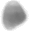
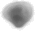
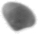
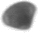
6.1.2 Gastropoda
6.1.2.1 Pteropoda
6.1.2.1.1 Limacinidae
New group
In previous studies (and associated training sets), this group was not studied.
The limacinidae have easily identifiable spiral shells ( Figure 6.2 ).


6.1.2.1.2 Cavoliniidae
The Cavoliniidae is shaped like a cone ( a french fry cones ;) ). The cone becomes wider and wider from bottom to top ( Figure 6.3 )
plot_vignettes(vigns, group = "Cavoliniidae")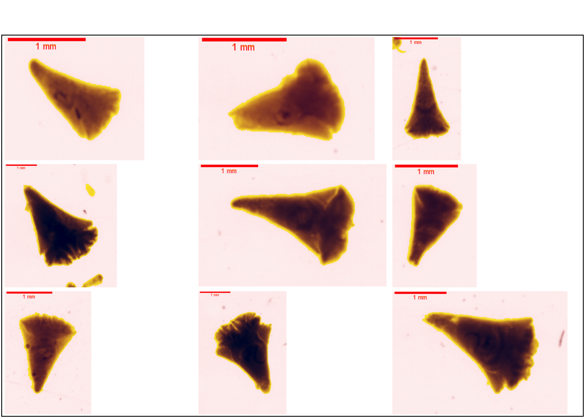
This group is similar to the Cavoliniidae group in ZooScanNet ( Figure 6.4 )
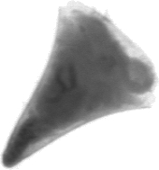
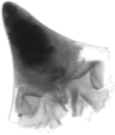
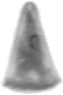
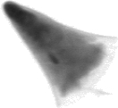
6.1.2.1.3 Creseideae
Note
The distinctions are interesting but these classes include few individuals.
6.1.2.1.3.1 Creseis_acicula
Creseis acicula is the name recognised by IZBN. Creseis clava is not recognised by IZBN (Horton et al. 2022). The name of this group The name of this group is changed from Dugauquier (2019).
C. acicula has a long and very thin shell.
The ZooScanNet includes the Creseis group and does not go further in the classification (Elineau et al. 2018). However, it is possible to refine this classification and recognise Creseis acicula in the ZooScanNet images ( Figure 6.5 ).
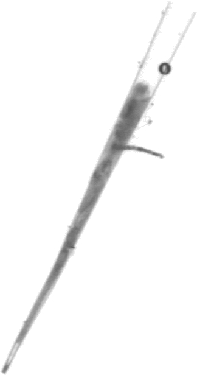
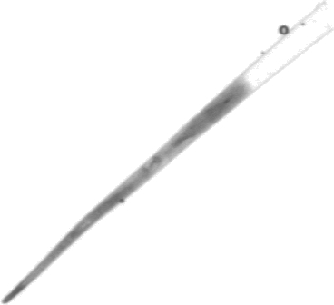
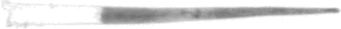
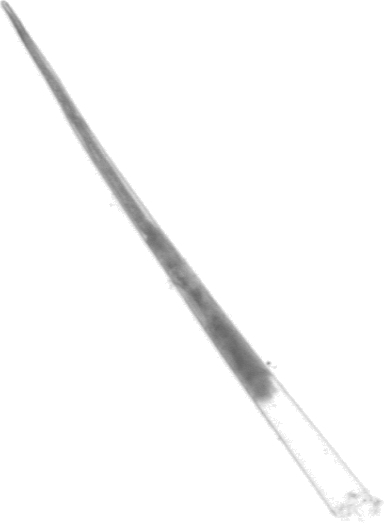
6.1.2.1.3.2 Creseis_conica
The C. conica has a slightly curved conical shell but less marked than for Creseis virgula, see Section 6.1.2.1.3.3 (Figure 6.6). The shell is also shorter and wider than that of Creseis acicula, see Section 6.1.2.1.3.1 .
plot_vignettes(vigns, group = "Creseis_conica", ny = 2)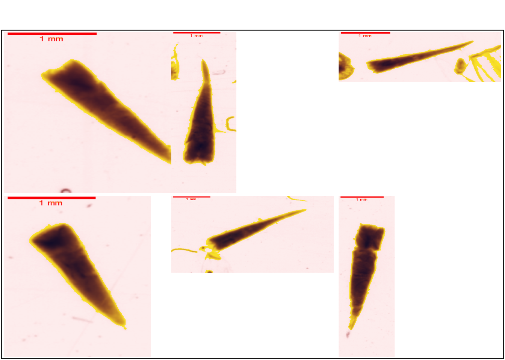
The ZooScanNet includes the Creseis group and does not go further in the classification (Elineau et al. 2018). However, it is possible to refine this classification and recognise Creseis acicula in the ZooScanNet images ( Figure 6.7 ).
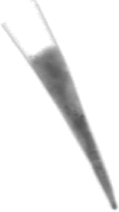
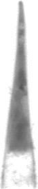
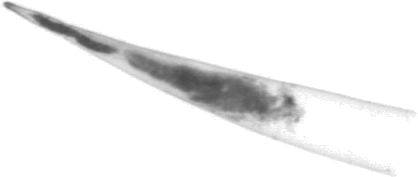
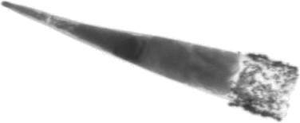
6.1.2.1.3.3 Creseis_virgula
The shell of Creseis virgula is conical with a pronounced curvature at the apex ( Figure 6.8 ).
plot_vignettes(vigns, group = "Creseis_virgula")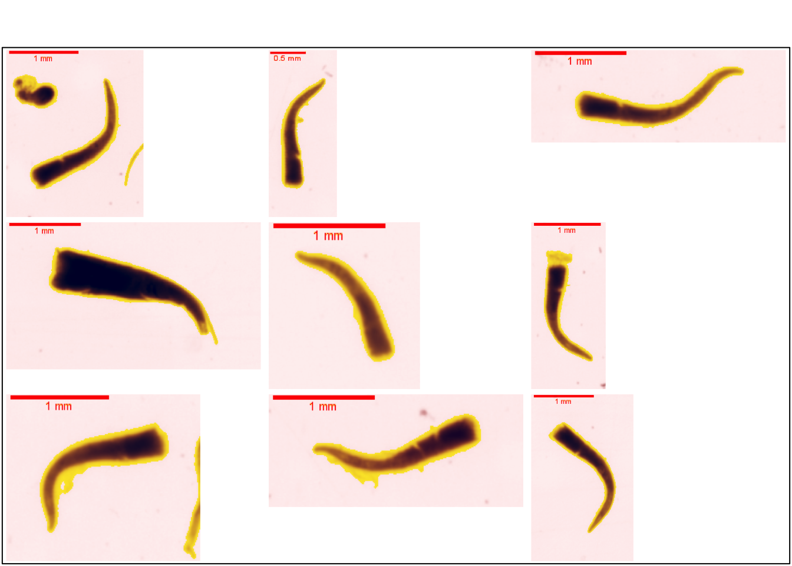
6.2 Annelida
The main characteristic of this phylum is the vermiform and metamerised body in several segments along a longitudinal axis.
6.2.1 Polychaeta
Parapods are the key to recognising polycheata.
6.2.1.1 Phyllodocida
6.2.1.1.1 Tomopteridae
New group
In previous studies (and associated training sets), this group was not studied.
The zooscannet includes the Tomopteridae group. These organisms have biramidal parapodia and a very flat body ( Figure 6.9 ).
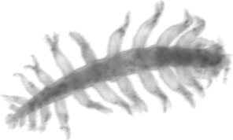
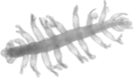
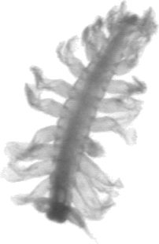
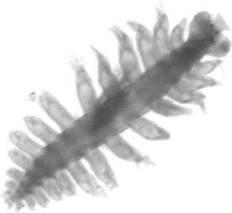
6.2.2 Annelida_adult
plot_vignettes(vigns, group = "Annelida_adult")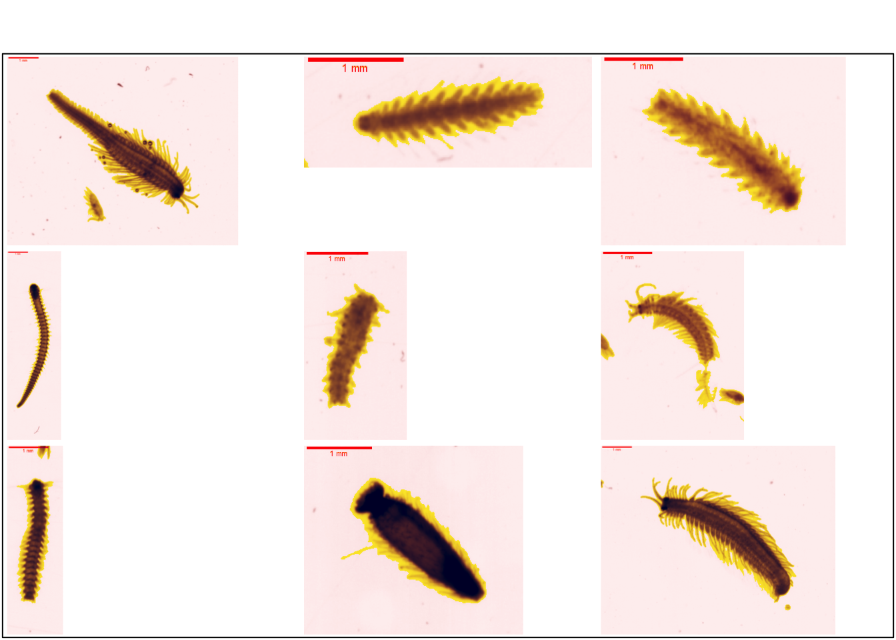
The zooscannet includes a similar group named annelida (Figure 6.11).
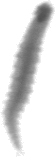
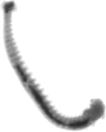
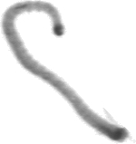
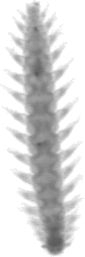
6.2.3 Annelida_larva
plot_vignettes(vigns, group = "Annelida_larva")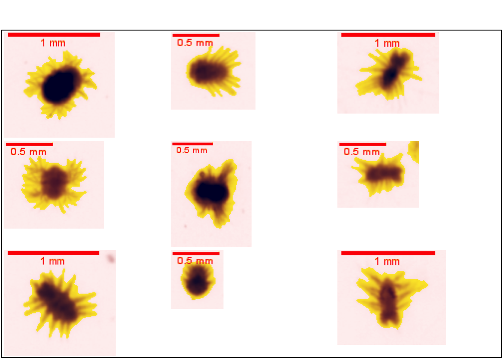
The zooscannet includes a similar group named larvae__annelida (Figure 6.13).
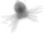
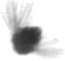
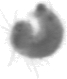
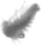
6.3 Vertebrata
6.3.1 Actinopterygii
6.3.1.1 Actinopterygii_larva
6.3.1.1.1 Actinopterygii_alevin
plot_vignettes(vigns, group = "Actinopterygii_alevin", ny = 2, nx = 2)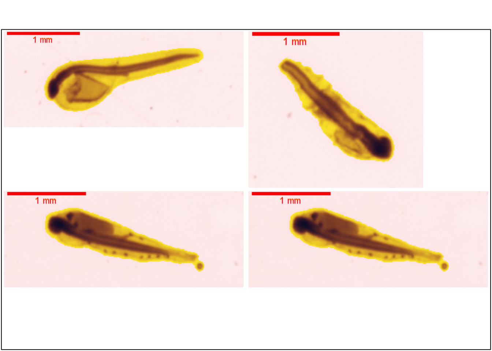
6.3.1.1.2 Actinopterygii_fry_type1
plot_vignettes(vigns, group = "Actinopterygii_fry_type1", ny = 2, nx = 3)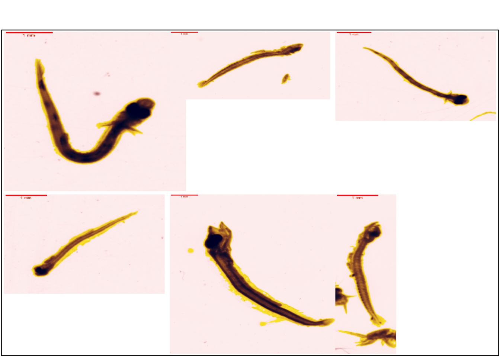
6.3.1.1.3 Actinopterygii_fry_type2
plot_vignettes(vigns, group = "Actinopterygii_fry_type2", ny = 2, nx = 3)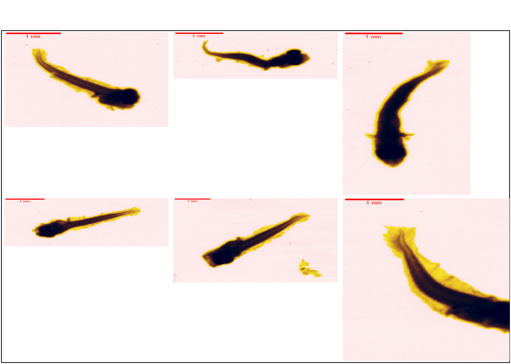